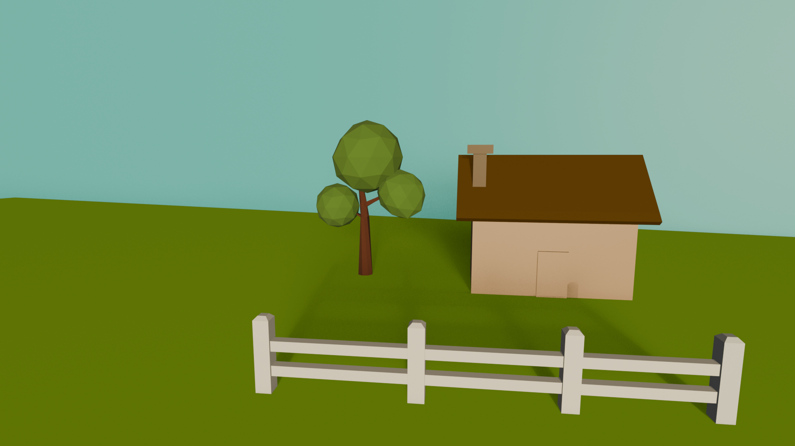
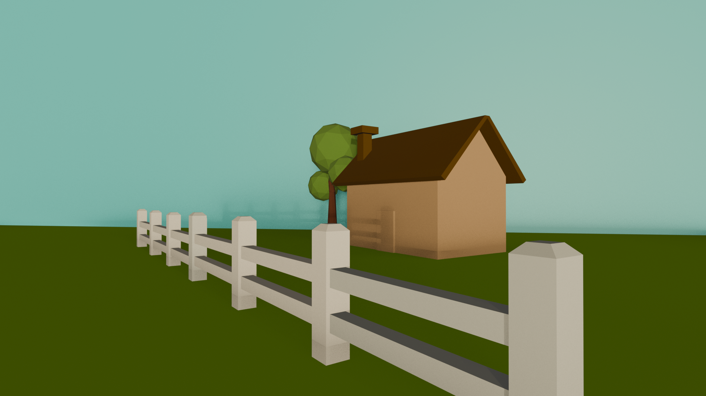
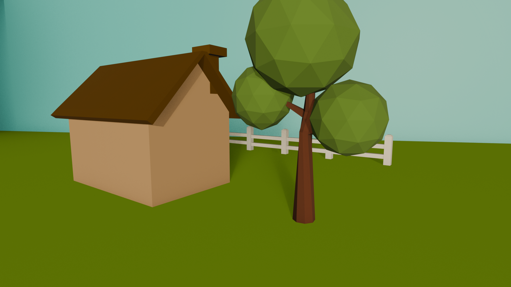

Blender Low-Polygon Assignment

- My goal was to build off the tutorial of the tree and create a scene with a house and white picket fence.

- As I look at the scene, I think placing the "sky" further away would give it more depth. Right now, it looks like the house is ontop of a cliff!

- I played around with the Set Active View to Camera setting to create some more interesting angles.
- In further iterations, I'd play around with the spacing of the planes, lighting, and add more details to my house. Right now, there is a door, but no doornob, there are not windows either.